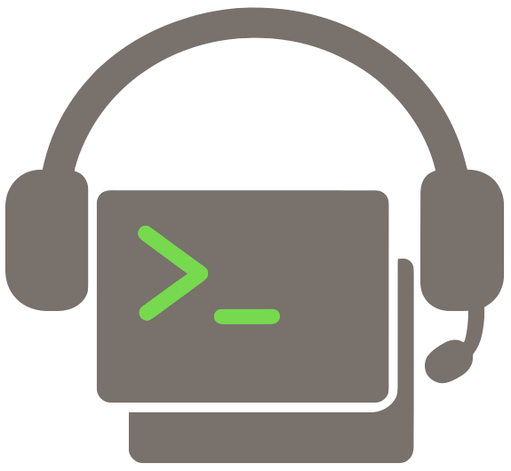

Watch a Linear project and farm out ready tickets to coding-agent CLIs running in workspaces backed by git worktrees. Workspaces are cmux panes on macOS or tmux windows on Linux/macOS.
npm install -g @clipboard-health/groundcrew
This installs the crew binary. @clipboard-health/clearance is pulled in transitively and provides the clearance / clearance-ensure bins used by local Safehouse execution.
Install prereqs. Node 24, git, cmux or tmux, and the agent CLIs themselves (claude, codex, cursor-agent, ...). Local runs require macOS with Safehouse on PATH; Linux/WSL hosts must run tickets through the configured remote runner by adding the agent-remote label. Sprite is currently the only remote provider. Optional: codexbar for session-usage gating. The workspaceKind config key picks the workspace backend (auto resolves to cmux when installed, else tmux).
Create a Linear project to scope your work. Any team works — make a project inside it and drop tickets in. The orchestrator polls by project, not by team, so you don't need a dedicated team.
Create your config. Copy the shipped example into the XDG config path and edit it:
mkdir -p "${XDG_CONFIG_HOME:-$HOME/.config}/groundcrew"
cp "$(npm root -g)/@clipboard-health/groundcrew/configExample.ts" \
"${XDG_CONFIG_HOME:-$HOME/.config}/groundcrew/config.ts"
$EDITOR "${XDG_CONFIG_HOME:-$HOME/.config}/groundcrew/config.ts"
At minimum set linear.projectSlug (paste the trailing segment of your Linear project URL, e.g. ai-strategy-5152195762f3), workspace.projectDir, and workspace.knownRepositories. Everything else has a default.
Create workspace.projectDir if it does not exist, and clone each repo in workspace.knownRepositories into <projectDir>/<repo> before the first crew run. Groundcrew creates per-ticket worktrees from these clones; it does not auto-clone. Use the literal knownRepositories string as the path under projectDir — "owner/repo" lives at <projectDir>/owner/repo, bare "repo" lives at <projectDir>/repo.
mkdir -p ~/dev/groundcrew-workspaces
gh repo clone owner/repo ~/dev/groundcrew-workspaces/owner/repo
crew resolves the config path as: GROUNDCREW_CONFIG if set → ${XDG_CONFIG_HOME:-$HOME/.config}/groundcrew/config.ts if it exists → a config.ts sitting next to crew's own source files (only useful from a local checkout; see Hacking on groundcrew). Set GROUNDCREW_CONFIG only when you want to override the XDG location.
Provide a Linear API key. crew expects LINEAR_API_KEY in its environment. Any mechanism works — shell export, direnv, a .env file you source, or piping through op run if you store the credential in 1Password:
# Direct
export LINEAR_API_KEY="lin_api_..."
crew doctor
# Via 1Password CLI (`op`), if you keep the key in a vault
echo "LINEAR_API_KEY='op://<vault>/LINEAR_API_KEY/credential'" > .env.1password
op run --env-file .env.1password -- crew doctor
Prepare the runner and agent auth. Groundcrew supports one local runner and one remote runner:
cmux or tmux workspace, Safehouse on PATH, clearance, and locally authenticated agent CLIs.cmux or tmux workspace that launches the configured remote runner.tmux workspace that launches the configured remote runner. Label tickets agent-remote; local execution is not supported.Local setup fails before creating a worktree when the host is not macOS or safehouse is missing. models.isolation, per-model isolation, and per-model sandbox are legacy keys and now fail config validation.
Set the clearance allowlist for local macOS runs. Groundcrew starts clearance from @clipboard-health/clearance on http://127.0.0.1:19999 (skipping the launch if something is already listening) and runs the agent through the bundled safehouse-clearance wrapper. Clearance refuses to start without an allowlist — see its README for the proxy's env vars, log paths, and DNS rules. The shortest path is to set the env before crew run:
CLEARANCE_ALLOW_HOSTS="api.openai.com,auth.openai.com,api.anthropic.com,mcp.linear.app,api.linear.app" \
crew run --watch
Groundcrew also ships a starter allowlist file covering model APIs, Linear, Notion, Slack, Datadog, GitHub, npm, and common dev tooling at $(npm root -g)/@clipboard-health/groundcrew/clearance-allow-hosts. Point clearance at it (and optionally a personal file) via CLEARANCE_ALLOW_HOSTS_FILES:
CLEARANCE_ALLOW_HOSTS_FILES="$(npm root -g)/@clipboard-health/groundcrew/clearance-allow-hosts:$HOME/.config/clearance/personal-allow-hosts" \
crew run --watch
Watch ${XDG_CACHE_HOME:-$HOME/.cache}/clearance/clearance.log for DENY lines and add only the domains your agents actually need.
Optional: prepare a remote runner. The current remote provider is Sprite, so setup is intentionally explicit: choose which agent CLIs and MCP servers to authenticate. --mcp only adds the servers you name; it does not attempt to authenticate every MCP server visible in your Claude account.
crew remote setup crew-claude-1 \
--claude \
--codex \
--copy-local-codex-auth \
--github \
--git-name "Rocky Warren" \
--git-email "1085683+therockstorm@users.noreply.github.com" \
--mcp linear \
--mcp slack \
--checkpoint
Known MCP aliases are linear, slack, and notion. For another HTTP MCP server, pass --mcp name=https://example.com/mcp. The command creates the remote runner if needed, prepares ~/dev, configures Git, runs selected auth flows, adds selected MCP servers to Claude Code, and then opens Claude so you can run /mcp and authenticate only those selected servers. With the Sprite provider, --copy-local-codex-auth copies ${CODEX_HOME:-$HOME/.codex}/auth.json into /home/sprite/.codex/auth.json and then verifies codex login status; it never prints the file contents. Use --skip-mcp-auth when you only want to add MCP definitions, and run the /mcp step later.
Repo setup is separate from runner setup and should run after the ticket branch exists, immediately before launching an agent. It clones/fetches the repo in the remote runner, checks out the requested branch (creating it from the base branch when it does not exist on origin), forwards only build-time secrets for the dependency install, removes the temporary secret file, clears those env vars, and then exits. It uses groundcrew's remote setup command.
op run --env-file "${XDG_CONFIG_HOME:-$HOME/.config}/groundcrew/op.env" -- \
crew remote bootstrap crew-claude-1 core-utils --branch rocky-team-123
By default bootstrap forwards any locally set NPM_TOKEN and BUF_TOKEN. Use repeated --secret <ENV_NAME> to require a specific set, or --no-secrets for public installs. Do not checkpoint after repo bootstrap; dependency state is branch-specific and should be refreshed per ticket.
To run a ticket remotely through the orchestrator or crew run --ticket, label it with agent-remote plus the agent label you want, for example agent-claude or agent-codex. agent-remote alone uses models.default. Groundcrew keeps cmux/tmux local, creates a per-ticket git worktree in the remote runner under remote.worktreeRoot, and asks the configured provider to launch the agent. The Sprite provider emits sprite exec --tty. Use crew remote sessions [<runner-name>] to inspect active remote sessions and crew remote attach <session-id-or-command> [--runner <runner-name>] to attach to one; both commands default to remote.runnerName when the runner name is omitted.
Run. Doctor first, then a dry run, then the real thing:
crew doctor
crew run --dry-run
crew run # one-shot
crew run --watch # poll forever
Required fields are marked required; everything else has a default and can be omitted from config.ts.
| Key | Default | What it does |
|---|---|---|
linear.projectSlug |
required | Linear project URL slug (e.g. ai-strategy-5152195762f3). The trailing 12-char hex slugId is what's matched against Linear's API; the leading name keeps config.ts self-documenting and the lookup survives project renames. |
linear.statuses.todo |
"Todo" |
Status name picked up for new work. |
linear.statuses.inProgress |
"In Progress" |
Status set after a workspace is provisioned; counts toward maximumInProgress. |
linear.statuses.done |
"Done" |
Status that triggers worktree cleanup. |
linear.statuses.terminal |
["Done"] |
Additional status names treated as terminal for cleanup, board remaining counts, and blocker checks. The done status is always included. |
git.remote |
"origin" |
Remote used for fetch and as the worktree base ref. |
git.defaultBranch |
"main" |
Branch fetched from git.remote and used as the worktree base. |
workspace.projectDir |
required | Parent dir for cloned repos and local sibling ticket worktrees. Remote ticket worktrees live in remote.worktreeRoot on the remote runner. |
workspace.knownRepositories |
required | Repos searched for in ticket descriptions to infer where work belongs. A ticket labeled for groundcrew (agent-*) fails fast when no known repo appears; unlabeled tickets are ignored. |
orchestrator.maximumInProgress |
4 |
Cap on tickets in linear.statuses.inProgress at once. |
orchestrator.pollIntervalMilliseconds |
120_000 |
Poll interval in --watch mode. |
orchestrator.sessionLimitPercentage |
85 |
Number in (0, 100]. A model whose codexbar session window exceeds this percentage is skipped that tick. |
models.default |
"claude" |
Tiebreak for agent-any resolution and fallback for explicit but unknown agent-* labels. Also used by crew setup <TICKET> for unlabeled tickets. crew run ignores unlabeled tickets and does not apply this default. Must exist in models.definitions. |
models.definitions |
{ claude, codex } |
Agent definitions. Additive merge with shipped defaults. |
models.definitions.<name>.cmd |
— | Shell command launched for the model. Local macOS runs execute in the worktree through Safehouse/clearance; remote runs execute inside the remote worktree. {{worktree}} is replaced before launch and legacy {{sandbox}} expands to an empty string. |
models.definitions.<name>.color |
— | Color for the workspace status pill (cmux only; tmux silently drops it). |
models.definitions.<name>.usage |
optional | If set, codexbar usage is fetched for this model and gated by sessionLimitPercentage. Omit to never gate. When usage.codexbar.source is omitted, groundcrew uses auto on macOS and cli elsewhere. |
prompts.initial |
(template) | First message sent to the agent. Placeholders: {{ticket}}, {{worktree}}, {{title}}, {{description}}. |
workspaceKind |
"auto" |
Terminal session manager. "auto" picks cmux when on PATH, else tmux. Set to "cmux" or "tmux" to fail loudly when the chosen backend is missing. tmux windows live in a dedicated groundcrew session. |
remote.provider |
"sprite" |
Remote runner provider used for tickets labeled agent-remote. Sprite is currently the only provider. |
remote.runnerName |
"crew-claude-1" |
Remote runner used for tickets labeled agent-remote. |
remote.owner |
"ClipboardHealth" |
GitHub owner used when cloning bare repository names inside the remote runner. |
remote.repoRoot |
"/home/sprite/dev" |
Shared clone root inside the remote runner. |
remote.worktreeRoot |
"/home/sprite/groundcrew/worktrees" |
Per-ticket remote worktree root inside the remote runner. |
remote.secretNames |
["NPM_TOKEN", "BUF_TOKEN"] |
Build-only env vars that may be uploaded for remote dependency setup, then unset before the agent process starts. |
logging.file |
XDG state path | Append-mode log file destination. log() / logEvent() tee here in addition to stdout, so a vanished workspace doesn't take the evidence with it. Defaults to ${XDG_STATE_HOME:-$HOME/.local/state}/groundcrew/groundcrew.log. |
The branch prefix (<prefix>-<TICKET>) is derived from your OS username (os.userInfo().username), not configured. Agent selection looks for a top-level Linear label named agent-<model> (e.g. agent-claude, agent-codex). Add agent-remote to run that ticket in the configured remote runner instead of locally; agent-remote is a modifier label, not a model. crew run only fetches tickets with an agent-* label — the GraphQL query filters them server-side, so unlabeled tickets are never returned by Linear's API and do not appear in the rendered board. Use crew setup <TICKET> to provision an unlabeled ticket on demand (manual setup falls back to models.default). The reserved label agent-any routes the ticket to the configured model with the most available session capacity (lowest codexbar session-used percent), skipping any model already over sessionLimitPercentage. With no usage data, agent-any resolves to models.default. The name any cannot be used in models.definitions. Todo tickets blocked by Linear issues that are not in linear.statuses.terminal are skipped until their blockers reach a terminal status.
crew remote setup crew-claude-1 --claude --codex --copy-local-codex-auth --github --mcp linear --checkpoint
crew remote bootstrap crew-claude-1 core-utils --branch rocky-team-123
crew remote sessions
crew remote attach <session-id-or-command> --runner crew-claude-1
crew remote ps crew-claude-1
crew remote interrupt <process-group-id> --runner crew-claude-1
crew run --ticket <TICKET>
crew cleanup <TICKET>
crew run --ticket <TICKET> provisions a single ticket the same way the orchestrator would: the repo is parsed from the ticket's Linear description, the model comes from the ticket's agent-* label, and agent-remote is honored. If the description does not mention a repo from workspace.knownRepositories, setup fails before provisioning. --watch and --ticket are mutually exclusive — --watch drives the orchestrator loop; --ticket provisions one ticket and exits. crew cleanup <TICKET> resolves to every tracked worktree carrying that ticket id (host and remote kinds, across repos) and tears them all down. To inspect remote sessions, run crew remote sessions or pass an explicit runner name. To attach to a listed session id or command selector, run crew remote attach <session-id-or-command>. If an attached agent appears stuck in a long-running shell tool, use crew remote ps <runner-name> to find the child process group (PGID) under the agent, then use crew remote interrupt <PGID> --runner <runner-name> to send SIGINT to that child command without killing the agent session. With the Sprite provider, if cleanup cannot remove a remote worktree because the agent is still running, stop that session with sprite sessions kill -s crew-claude-1 <session-id> and retry cleanup. To inspect codexbar session windows directly, run codexbar usage; the orchestrator already gates on this internally via orchestrator.sessionLimitPercentage.
models.isolation strategy and no direct local execution mode. On Linux/WSL, label tickets agent-remote and run them through the configured remote runner.models.definitions.<name>.cmd already starts with safehouse, groundcrew assumes that command owns its Safehouse flags and does not add the safehouse-clearance wrapper a second time. Changing the proxy's allowlist after it's running requires killing the PID in ${XDG_CACHE_HOME:-$HOME/.cache}/clearance/clearance.pid so the next launch picks up the new env..sbx worktrees or persistent Docker Sandboxes containers. If you have old state, inspect and remove it manually with sbx.crew cleanup removes tracked remote worktrees and branches, but it does not kill active remote sessions. Use crew remote sessions [<runner-name>] to inspect sessions and, with the Sprite provider, sprite sessions kill -s <runner-name> <session-id> when Git reports a worktree is busy.crew remote ps <runner-name> to inspect the remote process tree; interrupt the tool's child PGID, not the agent session PGID, with crew remote interrupt <PGID> --runner <runner-name>.crew remote setup <runner-name> --codex finishes interactive login but codex login status still fails inside the remote runner, rerun with --copy-local-codex-auth after confirming local Codex auth works.codexbar usage uses --source auto on macOS so CodexBar can prefer account/web sources and fall back as it supports. On Linux/WSL it uses --source cli, so install the CodexBar Linux CLI and authenticate the provider CLIs inside that environment.Started instead of In Progress, set linear.statuses.inProgress = "Started".inProgress when it provisions a workspace and never advances it. The next transition (typically "in review" when a PR opens) is left to your team's Linear automation rules.linear.statuses.inProgress.claude command is claude --permission-mode bypassPermissions to avoid workspace-trust and tool-permission prompts blocking automation. Override models.definitions.claude.cmd if you want a stricter mode.cmd and checks the first two non-flag tokens against PATH (so safehouse claude --foo checks both safehouse and claude). Boolean flags without values, env-var assignments (FOO=1), shell pipelines, and subshells are not parsed — verify those manually. In particular, npx -y claude and env FOO=1 claude only check the wrapper, not the wrapped CLI.models.definitions always contains claude and codex (additive merge with the shipped defaults). If you only intend to label tickets agent-claude, doctor will still fail on a missing codex binary and exit non-zero. crew run itself only routes to the model named in a ticket's agent-* label, so a doctor failure for an unused model does not block actual ticket dispatch.workspaceKind: "tmux" to force the tmux backend when cmux's CLI/socket bridge is flaky (symptoms: cmux --json list-workspaces returning Failed to write to socket (Broken pipe) or Socket not found at ...cmux.sock on every tick). tmux is more reliable — just a unix socket, no GUI app — at the cost of losing cmux's status pills, notifications, and vertical-tab sidebar.<your cmd> "<prompt>". claude, codex, and cursor-agent all support this.For developers working on the package itself, the source lives in ClipboardHealth/core-utils. Clone it, run npm install, and the repo's crew / crew:op scripts execute groundcrew straight from TypeScript source — no build step. The bin's runCli helper re-execs node with --conditions @clipboard-health/source so @clipboard-health/clearance also resolves to source.
cd ~/dev/c/core-utils
node --run crew -- doctor
# With 1Password for LINEAR_API_KEY:
node --run crew:op -- run --watch
Both forms read ${XDG_CONFIG_HOME:-$HOME/.config}/groundcrew/config.ts by default; set GROUNDCREW_CONFIG to point elsewhere. The crew:op wrapper additionally reads ${XDG_CONFIG_HOME:-$HOME/.config}/groundcrew/op.env (1Password env-file with op:// references resolved at launch) — symlink it there if you keep yours elsewhere; the path is not configurable.
Logs land in ${XDG_STATE_HOME:-$HOME/.local/state}/groundcrew/groundcrew.log by default (override via logging.file in your config). The "Loaded config from …" line at startup tells you which config won.
Source edits in packages/{clearance,groundcrew}/src/** are picked up on the next invocation. Requires Node ≥ 24.3 (the version with native .ts type stripping enabled by default).